In this project we implement image warping and experiment with image morphing and finding average faces in a dataset.
Defining Correspondences
I built a lightweight selection tool that allows for selecting corresponding points between two separate images.
Image interpolation
In order to implement the image warping algorithm, I first implemented a Bilinear interpolation algorithm that treats an image as a function with domain in [0, 1]^2. This simplification of coordinates simplifies indexing later in the warping algorithm. The bilinear interpolation is implemented simply as two linear interpolations: sampling our function at a location (x1, x2), is in general not on a pixel value. So we look at the 4 neighboring pixel values. Then we perform two interpolations horizontally, across the top and across the bottom of the enclosing square, to approximate the function value at x2. Then we perform a vertical linear interpolation between these two values to finally find the value of the bilinear interpolation at (x1, x2).
Triangulating and Warping, and the midway face
Then, we use a Delaunay triangulation on the averages of the corresponding points to partition the images into triangles. Now, to compute a warped image we start with the coordinates of the regular (h, w) grid in [0, 1]^2, and think of each one of these coordinates as a "measurement location" where we are going to sample the image to form a pixel value.
Now, each pixel lies in one of the triangles. And our correspondences define maps between the triangles. A standard fact tells us that there is a unique affine transformation that maps the vertices of one nondegenerate triangle to another nondegenerate triangle. We compute this affine transformation as a linear map in R^3 on an affine subspace. P1 @ P0^{-1} (observe A P0 = P1 implies A = P1 P0^{-1}), where P1 and P0 are the 3x3 matrices representing the source and target triangles lying on the affine subspace z = 1 in R^3, and then projecting the points back down into R^2 for input into the linear interpolation.
So we transform each pixel coordinate according to the affine transformation defined by its enclosing triangle. And then we sample from the interpolation with our transformed coordinates to obtain the final warped image.
Here, we show a midway point in this computation:
Image Morph Sequences
In order to morph between images, we perform a linear interpolation from our source point set to our target point set. We then warp both images to the points obtained in the interpolation, and compute a weighted average of the two warped images, with weight coming from the paramater in the linear interpolation.
 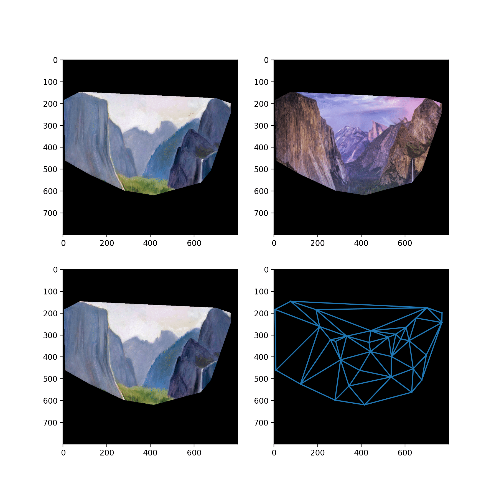
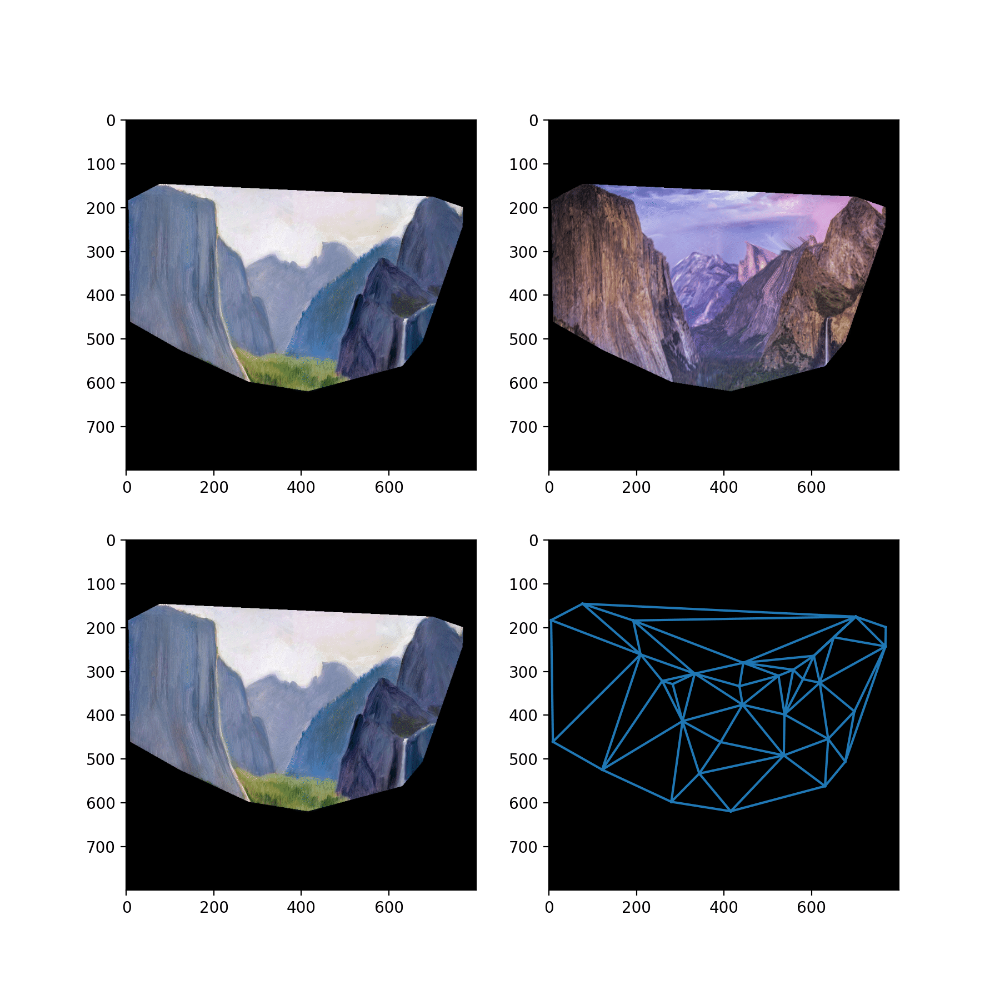
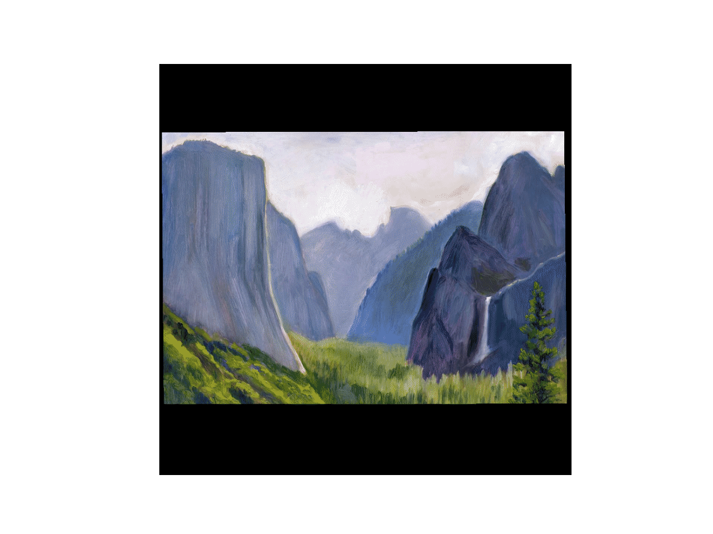 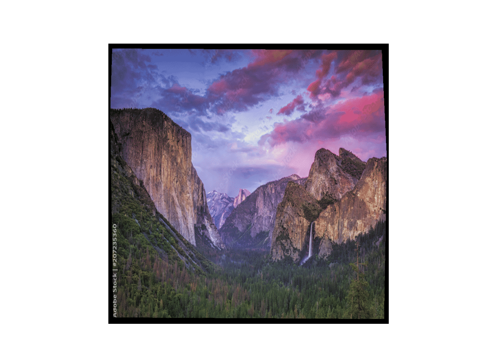
Face Dataset Averaging
Next, we look at finding an average face from an image dataset.
We use the FEI Face Database Spatially normalized frontal images,
and the provided manual alignment. We look at the subsets of the
faces in the dataset that are smiling and those that are not, and
we additionally divide the dataset up into those including glasses
and those that do not.
We then compute the average face for each of these four subsets. We
compute the average similarly as in the morph sequence, only now we
are warping annotated points to their average locations and then
taking the element wise averege of the warped images to give the
final average image in the dataset.
Face Warping and Extrapolation
Then I warp an image of myself into the geometry of the average face, and I warp the average face into the geometry of my face. Additionally, I display an animation of the warping of the average face, but extrapolating beyond convex combinations of the corresponding points. Due to medical reasons, I look straight ahead with a slightly turned head (hence take photos with a slightly turned head), and in these warpings the misalignment of my head is particularly noticable.
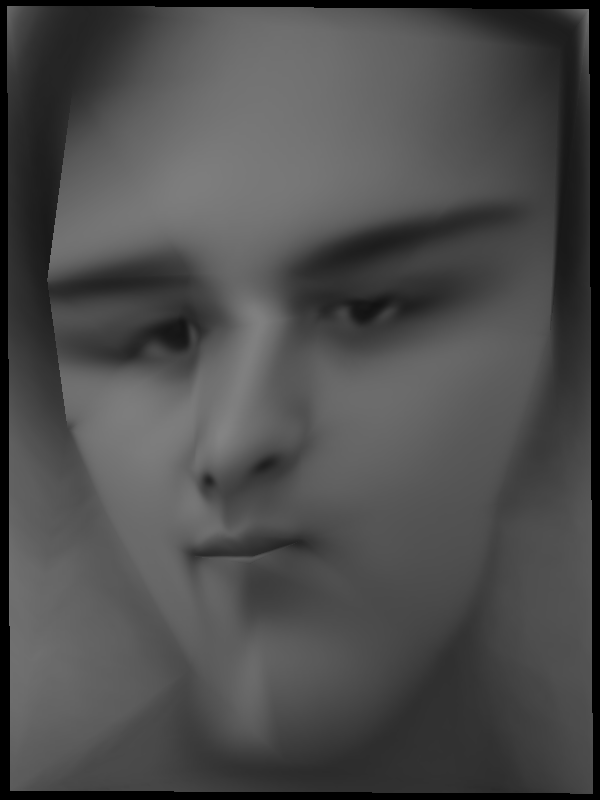 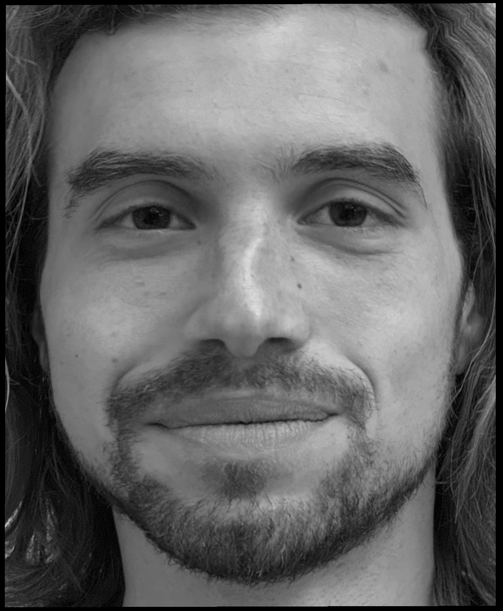
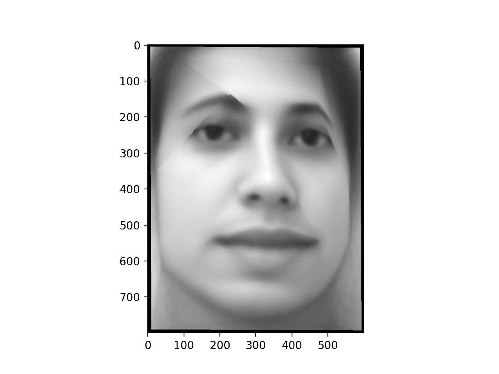
Continuous warping with differential equations.
Next, we look at performing continuous deformations to an image with by letting the pixels sampling coordinates evolve according to an ODE. This is interesting because of the connections between differential equations and differential geometry. In this project, I implement an interactive visualization of such transformations with sliders that control the paramaters for the differential equation that governs the image transformation.
A quadratic differential equation with terms given by the porduct of the coefficients of theta with the terms of (1 + xi + xj)(1 + xi + xj) governs the image transformation. Furthermore, we impose a boundary contition that ensures that the points on the edge of the image remain stationary under the differential equation, since this produces more interesting results. I simulated the ODE with a simple implementation of Eulers method.
In the future it will be intersting to explore more of this connection, and potentially learnging differential equations that correspond to particular image transformations (i.e. learn differential equations that approximates some video)
 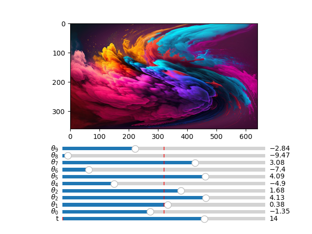
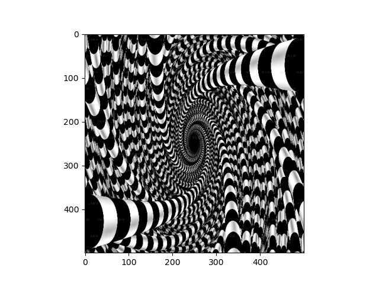
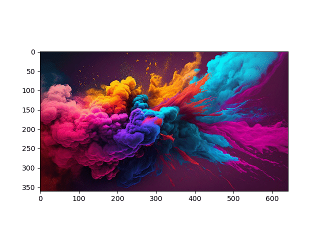
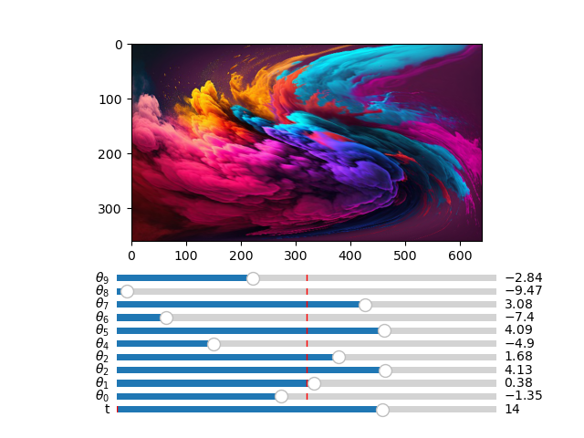
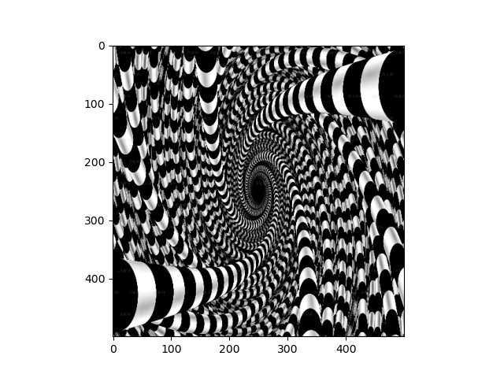
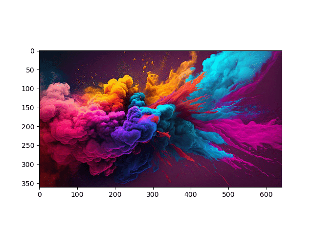